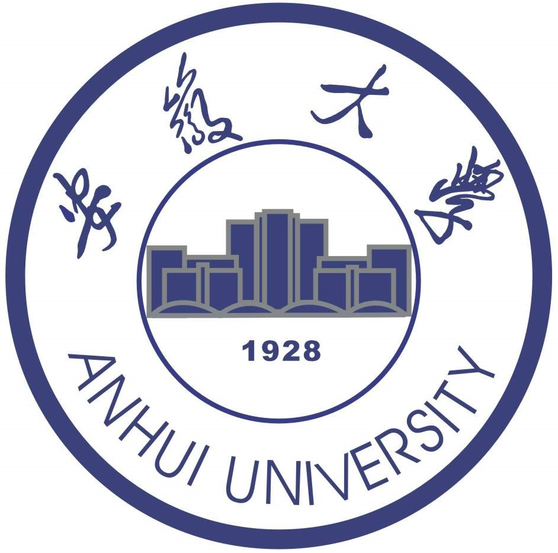

曾伟辉 (Weihui Zeng)
|
博士研究生,中共党员 |
关于我
目前在安徽大学从事教学科研工作，任安徽大学互联网学院物联网工程系副主任，农业生态大数据应用与分析技术国家地方联合工程研究中心骨干成员。 本人2018年12月从中国科学技术大学信息科学技术学院获得控制科学与工程博士学位，2009年6月获得模式识别与智能系统硕士学位。
我的研究兴趣主要包括: 计算机视觉与模式识别、大数据分析及数据挖掘、机器视觉等。
工作经历
|  |
教学科研讲师安徽大学 (2019.9 ~ 至今)
|

|
博士后 科大国创 (2020.12 ~ 至今)
|

|
副研究员 中国科学院合肥物质科学研究院 合肥智能所 (2009.7 ~ 2019.9)
|
教育经历

|
博士&硕士 中国科学技术大学 (2013.9 ~ 2018.12；2006.9 ~ 2009.7)
|

|
本科 合肥工业大学 (2000.9 ~ 2004.7)
|
论文
-
Lightweight dense-scale network (LDSNet) for corn leaf disease identification
Weihui Zeng, Haidong Li, Gensheng Hu* , Dong Liang
Computers and Electronics in Agriculture, 2022. [PDF]
-
Identification of maize leaf diseases by using the SKPSNet-50 convolutional neural network model
Weihui Zeng, Haidong Li, Gensheng Hu* , Dong Liang
Sustainable Computing: Informatics and Systems, 2022. [PDF]
-
Crop leaf disease recognition based on Self-Attention convolutional neural network
Weihui Zeng, Miao Li
Computers and Electronics in Agriculture, 2020. [PDF]
-
基于卷积块注意力胶囊网络的小样本水稻害虫识别
曾伟辉, 唐欣, 胡根生,梁栋
中国农业大学学报 2022. [PDF]
-
基于高阶残差和参数共享反馈卷积神经网络的农作物病害识别
曾伟辉, 李淼,李增, 熊焰
电子学报 2019. [中文CCF A][PDF]
-
面向农作物病害识别的高阶残差卷积神经网络研究
曾伟辉, 李淼, 张健, 黄小平, 王敬贤, 袁媛
中国科学技术大学学报 2019. [PDF]
-
High-Order Residual Convolutional Neural Network for Robust Crop Disease Recognition
Weihui Zeng, Miao Li, Jian Zhang, Lei Chen, et al
CSAE , 2018, [EI]
专利
-
基于改进Cascade RCNN 网络的自然背景柑橘黄龙病检测方法
曾伟辉, 陈亚飞， 胡根生， 鲍文霞，梁栋，黄林生，赵晋陵，陈鹏，张文凤，李海东，郭丹丹
国家发明专利, 申请号:CN202210204848.0
-
复杂环境下的玉米叶病害图像的识别方法及系统
李海东， 曾伟辉, 胡根生
国家发明专利, 申请号:CN202110757395.X
-
用于矫正坐姿的便携式提醒装置
刘梦婷， 曾伟辉
国家实用新型专利, 授权号:ZL202121116627.5
项目
-
面向真实复杂场景的低质量水稻病虫害图像识别研究(No. 2108085MC95)
负责人; 经费:12万元; 获批年份：2021年
安徽省自然科学基金面上项目
-
基于多策略多模块优化融合的自监督学习水稻少样本病虫害图像精准识别方法研究(No. KJ2020A0039)
负责人; 经费:6万元; 获批年份：2021年
安徽高校自然科学研究重点项目
-
负责人; 经费:25万元; 获批年份：2019年
安徽大学人才科研启动项目
-
基于轻量级网络的水稻病虫害智能识别方法研究(No. AE202004)
负责人; 经费:6万元; 获批年份：2021年
农业生态大数据分析与应用国家地方联合工程研究中心开放课题项目
-
庐江县同大镇农技站一平台四服务平台设计及设备采购项目(No. 2016LJFD1602)
负责人; 经费:10.5万元; 获批年份：2016年
安徽省庐江县横向课题项目
-
果蔬产品农残检测科技领域云建设与应用(No. 2013340022001862)
负责人; 经费:5万元; 获批年份：2013年
中科院MSR-CNIC Windows Azure合作计划项目